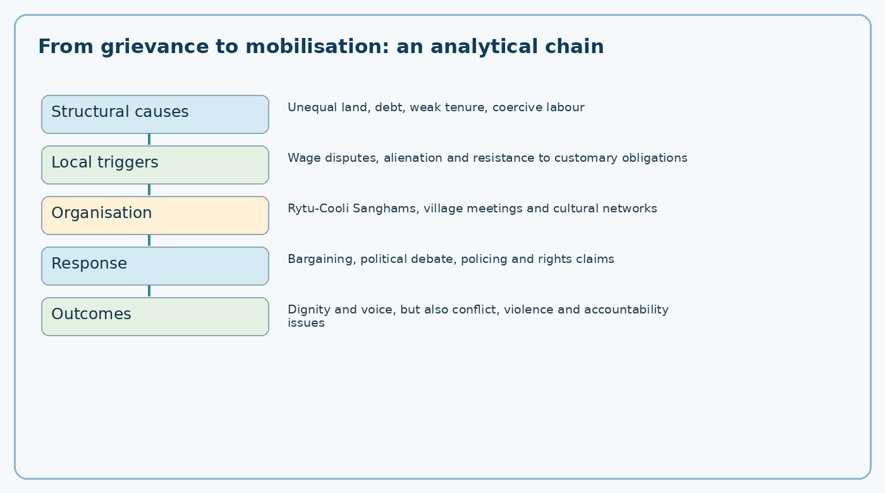
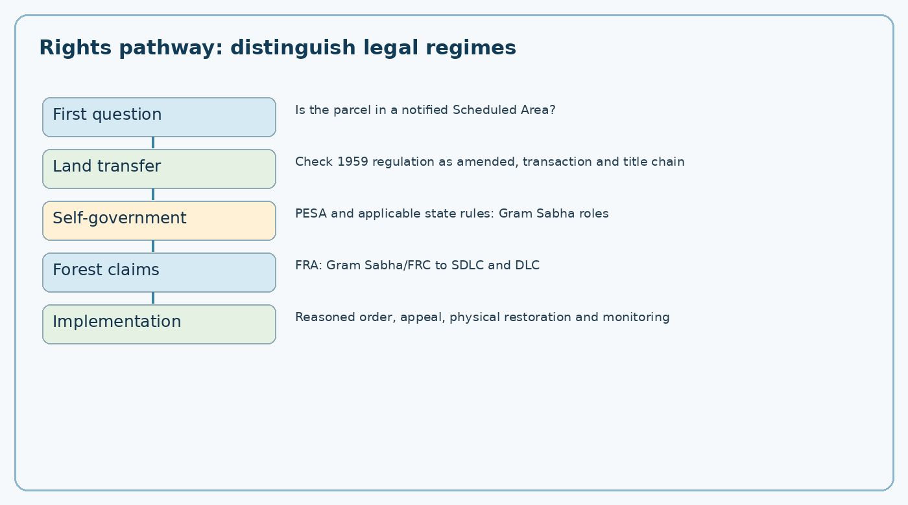
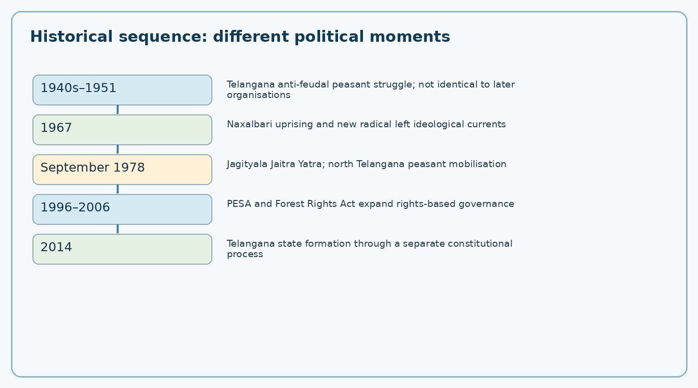

Integrated PDF · Editable master · Preserved original PDF
TGPSC Group I Mains | Telangana Movement and State Formation | Original English study manuscript | 25 October 2026 | Publication draft; independent academic review pending
Syllabus fidelity. The wording indexed from the commission syllabus and cross-checked against a 2024 Group-I syllabus reproduction is: “Rise and Spread of Naxalite Movement, causes and consequences - Anti-Landlord Struggles in Jagityala-Siricilla, North Telangana; Rytu-Cooli Sanghams; Alienation of Tribal Lands and Adivasi Resistance- Jal, Jungle, and Zamin.” The commission-hosted original Notification 02/2024 could not be directly reopened for this chapter; exact orthography and punctuation therefore remain a verification item. “Jal, Jungle, Zamin” means water, forest and land; the slogan is not itself a statute.
Question provenance. Every MCQ, case and mains question below is original practice. None is represented as a verified TGPSC previous-year question. Dates, crowd sizes and casualty totals from retrospective narratives are not treated as independently authenticated unless an original record is available.
| Commission subpoint | Detailed study blocks | Analytical skill |
|---|---|---|
| Rise and spread of Naxalite movement; causes and consequences | Sections 1–10 | Distinguish structural agrarian grievances, ideology, organisation, violence and state response |
| Anti-landlord struggles in Jagityala–Siricilla | Sections 11–16 | Reconstruct locally situated demands without confusing oral accounts with official statistics |
| Rytu-Cooli Sanghams | Sections 17–20 | Explain organisation, collective bargaining, class and gender participation |
| Tribal land alienation | Sections 21–27 | Apply Scheduled Area regulations, Fifth Schedule and evidentiary tests |
| Adivasi resistance: Jal, Jungle, Zamin | Sections 28–32 | Connect customary access, rights-based remedies and ecological governance |
| Application, revision and answer writing | Appendices | Construct balanced, sourced, constitutionally grounded mains answers |
The rise of radical agrarian mobilisation in north Telangana is not an isolated episode of underground party history. It reveals how unresolved tenancy, unequal control over agricultural surplus, coercive village hierarchies and disputed forest rights affected public trust in institutions during the decades after the 1956 formation of Andhra Pradesh. It also shows that “Telangana movement” has never been a single organisation with one objective. Separate-state activists, land-reform campaigners, tribal organisations, constitutional parties and armed revolutionaries sometimes operated in overlapping geographies while disagreeing fundamentally about the state, democracy and political methods. An answer that calls all of them one movement is analytically weak.
The historical question is why certain villagers found militant organisations credible when formal legal protections already existed on paper. The answer requires distinguishing law as enacted from law as experienced. Land ceiling statutes, tenancy provisions and Scheduled Area protections promised reform, but implementation could be obstructed by record manipulation, litigation, local influence and fear of retaliation. At the same time, violence against civilians and public officials is not justified merely by invoking injustice. A balanced account examines grievances, coercive methods, democratic alternatives and their human costs.
Under the former Hyderabad State, patterns of jagirdari, deshmukh influence, revenue farming and unequal tenancy left durable local hierarchies. Their forms varied across districts; not every large holder exercised the same authority. Some rural labourers faced unpaid or underpaid service obligations known in local accounts as vetti, while tenants encountered insecure possession and high extraction. Post-integration reforms altered the legal landscape, but social power did not disappear when a statute was repealed or a title changed hands. Landowners could retain control over credit, irrigation access, marketing and police contacts even after formal landlord privileges weakened.
Historical continuity must be argued carefully. The armed Telangana peasant struggle of the 1940s, associated with communist mobilisation against Nizam-era rural oppression, shaped later political memory; it was not the same organisation, leadership or conjuncture as the post-1967 Naxalite movement. One belongs principally to late princely-state and early integration history; the other arose amid independent India's electoral institutions and new Maoist strategies. The overlap lies in the persistence of agrarian conflict and in stories transmitted through families, songs and political education.
Agricultural modernisation was uneven. Irrigation, roads, fertiliser use, commercial cropping and market integration could increase production without equalising bargaining power. A small cultivator might benefit from a better road yet remain dependent on an informal lender for seeds. A landless labourer might find more seasonal employment yet lack bargaining power over wages. Land reforms were implemented through administrative records, exemptions and adjudication, making the quality of village-level governance decisive. Distinguish landlessness, insecure tenancy and low productivity: they are related problems but need different remedies.
The Green Revolution is often presented as a uniform national turning point. In Telangana, its timing and benefits varied by water availability, crop choice, capital and region. An answer should not mechanically import Punjab's experience. Irrigated farmers, dryland cultivators, agricultural workers and Adivasi households faced different constraints. A useful causal chain is: unequal asset ownership plus credit dependence plus weak grievance redressal leads to distributive conflict; organised mobilisation then changes the bargaining environment, sometimes prompting reforms and sometimes generating violence or repression.
The name “Naxalite” derives from the 1967 uprising in the Naxalbari area of northern West Bengal. Radical communist currents challenged parliamentary gradualism and argued that revolutionary rural mobilisation should transform land relations and state power. The movement's early ideological literature drew on Maoist conceptions of class struggle and agrarian revolution. It is important to distinguish ideological influence from the actual concerns of participants: a village worker might join a protest for higher wages or an end to forced labour without endorsing a full theory of revolutionary state capture.
The movement did not simply spread by copying a template from West Bengal. Local cadres interpreted national and international doctrines through existing village disputes. Networks of students, teachers, cultural activists and organisers connected town and countryside, but their influence depended on local credibility. State repression, intra-left disputes, factional splits and debates over armed tactics shaped organisational trajectories. Treating the movement as either pure liberation or pure criminality erases its complicated social base and the harms produced by coercion.
The late-1940s Telangana peasant struggle furnished a political vocabulary of land, dignity and collective organisation. Yet after 1951 many communists pursued legal mass politics, elections and unions. Radical currents after 1967 criticised that approach and argued for different revolutionary tactics. Their disagreements were substantive: whether to prioritise mass associations or clandestine squads, how to approach elections, what role violence should play and how to relate to local struggles. These disputes changed the movement's relationship with peasants, labourers and civil liberties groups.
A historian should avoid treating “communist”, “Naxalite”, “Maoist” and “Rytu-Cooli Sangham” as interchangeable labels. They refer to political families, tactics or organisational forms with changing affiliations. Membership lists, party documents, contemporary newspaper reports and village testimonies may disagree. When a source uses a label retrospectively, identify whether it describes the organisation at the time or is an interpretation imposed later.
The Jagityala–Siricilla belt lay within a landscape of agrarian inequality, village-based social authority and active networks of students and organisers. The relevant administrative boundaries have changed over time: historical references to taluks or old Karimnagar district should not be mechanically mapped onto present-day district names. Village disputes over wages, unpaid services, tenancy, grazing and access to land could be connected through organisers who travelled between settlements. Collective action gained strength when a local grievance was presented as part of a wider structure of exploitation.
Geography mattered but did not predetermine politics. Dryland conditions, market access, local caste configurations and the presence of large landowners varied. The movement's spread cannot be explained by poverty alone; equally poor places experienced different mobilisation. Organisational capacity, existing grievance networks, state response and the ability to sustain participation help explain differences. For mains, contrast structural conditions (why grievances existed) with triggering events (why protests occurred then) and organisational mechanisms (how mobilisation endured).
In the accounts of anti-landlord mobilisation, “landlordism” referred not only to acreage but to interlocking control over land, labour, credit and local institutions. A household might depend on the same influential family for tenancy, employment, emergency borrowing and mediation of disputes. Such dependence made exit costly and individual complaints risky. A wage dispute could therefore become a struggle about public humiliation, access to common land or freedom from customary obligations. Caste and gender hierarchies could intensify these dependencies.
Not every landlord used identical practices, and a reliable answer should not presume individual guilt from social category. The analytical target is a structure that can produce coercive leverage. A land-record inquiry asks who holds legal title, who actually cultivates, whether leases are recorded, whether ceiling declarations are accurate and whether customary common-property uses were extinguished. A social inquiry asks who can speak in village meetings, who can refuse work and whether women and landless households can access grievance forums without intimidation.
Agricultural wages may be paid in cash, grain or a mixture; seasonal variation and delayed payment can conceal the effective rate. In some villages, accounts of vetti described labour or services extracted without fair remuneration. Anti-landlord organisers made the abolition of such practices a public question, not merely a private dispute. Refusing unpaid service was a visible challenge to status hierarchies, and collective refusal could reduce the retaliation faced by a single household. Demands for higher wages, payment arrears and freedom to choose an employer were thus linked to dignity.
One must distinguish a lawful strike or collective wage demand from threats, assaults or unlawful confiscation. Organisers may claim that coercive methods were necessary to overcome entrenched power; critics argue that such methods can create new forms of domination. A rights-based evaluation asks whether workers gained sustainable bargaining power, whether women and marginalised castes benefited, whether violence increased and whether formal institutions became more accessible. Outcomes should be established village by village rather than inferred from slogans.
A small cultivator facing crop failure may borrow against expected harvests or land, often without bargaining power to negotiate interest and documentation. Distress sales, benami transactions and informal mortgages can turn temporary liquidity shortages into permanent asset loss. In Adivasi areas the problem is especially acute when customary possession is not reflected in official records. Debt and land alienation reinforce each other: loss of land increases wage dependence, while wage dependence reduces the capacity to repay debt. This dynamic makes access to affordable institutional credit a land-rights issue.
Legal categories matter. A disputed sale in a Scheduled Area may be void under a protective land-transfer regulation even if a deed was registered. A transaction outside the Scheduled Area requires a different statutory analysis. Bonded labour is separately prohibited under the Bonded Labour System (Abolition) Act, 1976. Administrators should not promise automatic restoration before verifying location, dates, parties, land category and governing law. Good exam answers connect moral grievance to the correct legal procedure.
The Naxalite movement contained different organisational currents and changed over decades. Some factions stressed mass peasant associations, while others favoured underground armed squads or different combinations. Rytu-Cooli Sanghams were mass organisational forms in particular settings, not a single timeless statewide organisation. The relationship between a village sangham and an underground party should be established from evidence rather than assumed from a similar name. Political histories written by participants are valuable for motives and internal debates but may underreport errors and abuses.
Police reports may document prosecutions and security concerns, yet allegations are not the same as judicial findings. Newspapers can preserve chronology while reproducing official or partisan framing. Oral histories can recover the experience of women and labourers missing from archives, but memory may compress dates and events. Triangulation means comparing independent source types and identifying contradictions. A rigorous chapter therefore uses approximate chronology where archival certainty is missing and never invents certified attendance, acreage or casualty figures.
Accounts of mobilisation in the old Karimnagar region describe demands to end unpaid services, raise agricultural wages, resist arbitrary exactions and challenge concentrated land control. The local unit of struggle was often the village, but coordination across settlements turned scattered disputes into a regional political event. Mobilisation involved meetings, petitions, boycotts, demonstrations and, in some contexts, coercive action. An examiner expects the link between local grievances and broader ideological organisation, not merely a list of slogans.
The distinction between Jagityala and Siricilla is also useful. The names identify historically connected centres of agitation, not an assertion that every village experienced the same sequence. Siricilla has an industrial and weaving history alongside rural hinterland politics; Jagityala's agrarian setting cannot be reduced to the contemporary district's administrative boundaries. Use the historical taluk terminology when discussing 1970s events, and explain current geography separately if needed.
The Jagityala Jaitra Yatra of September 1978 is frequently cited in retrospective accounts as a major public expression of organised peasant and agricultural-worker mobilisation. The event matters because it demonstrated that demands previously handled at village level could be articulated publicly across a wider area. Speeches, songs and collective travel were mechanisms of political education. The exact crowd size commonly repeated in coaching notes should not be presented as an audited figure without the contemporaneous police or organiser record.
The phrase jaitra yatra signifies a victorious or assertive march in movement memory; it does not prove that every demand was legally achieved. A careful answer asks what the participants demanded, how local elites responded, what actions authorities took and whether lasting changes occurred in wages, tenancy or access to land. It should also examine whether workers could act freely or faced pressure from any side. Historical importance rests on the transformation of collective confidence and political visibility, not on an unverified attendance number.
Collective non-cooperation may include refusing unpaid work, declining to provide customary services or withdrawing labour from a particular employer. In an unequal village, such tactics can challenge a powerful household without immediately relying on formal courts. Yet a social boycott can also become coercive if it deprives families of essential services, imposes threats or targets persons because of identity. The ethical and legal character of a boycott depends on its methods, not merely on the stated cause.
When studying reported punishments imposed by movement cadres on landlords, distinguish allegation, contemporary reporting and proven event. Do not romanticise extrajudicial violence as an inevitable route to justice. Nor should a critique of violent tactics erase the documented grievances that brought workers into collective action. The constitutional alternative combines labour enforcement, tenancy adjudication, access to legal aid, witness protection and credible policing. This distinction is especially valuable in a mains question asking for both causes and consequences.
Accounts of late-1970s Jagityala–Siricilla mobilisation refer to intensified policing and the declaration of affected areas as disturbed. The precise order number, date and statutory basis must be verified from the original government notification before being quoted as a certified legal fact. State authorities faced a genuine duty to protect life and property; they also had a duty to respect due process and avoid indiscriminate punishment. A policy that treats every protester as an armed participant can destroy the legitimacy of lawful grievance mechanisms.
The administrative distinction is between peaceful assembly, unlawful intimidation, criminal assault and armed insurgency. Each requires different evidence and a proportionate response. Mass arrests without adequate proof may disrupt agricultural livelihoods and create resentment; failure to investigate violence against villagers or officials also undermines confidence. Independent complaint channels, judicial scrutiny, recorded arrests and transparent land-dispute adjudication are not optional extras but part of lawful security governance.
Mobilisation could alter social deference, improve bargaining power in particular settlements and bring land and labour issues into public debate. It could also generate cycles of retaliation, flight of influential families, prosecutions, injuries and insecurity. The outcomes were not uniform. Some village organisations survived, others fragmented, and some participants withdrew because of the risks. Women and lower-caste labourers might gain a stronger public voice while still encountering unequal authority within movements themselves.
For Telangana's wider political history, the struggles showed that regional inequality was not only about jobs in Hyderabad or state-level budget allocations. Rural class and tribal land questions had their own dynamics. They also forced political parties, civil-rights organisations and governments to confront the gap between formal reform and village implementation. Do not claim that the peasant mobilisation directly caused the 2014 state formation; a historically defensible answer identifies indirect influence on political consciousness and discourse.
An outcome evaluation should compare similar villages and periods rather than assume that every later wage rise was caused by agitation. Agricultural wages respond to rainfall, crop prices, labour migration, public works and mechanisation. A movement may accelerate change but cannot automatically claim all subsequent improvements. Likewise, the presence of police camps does not alone establish whether every allegation of repression is accurate. Source criticism is necessary precisely because participants have strong incentives to tell morally coherent stories.
A useful evaluation framework has four dimensions: distributive outcomes (land, wages, debt), procedural outcomes (access to courts and records), social outcomes (dignity, gender and caste voice) and security outcomes (violence, fear, due process). A balanced conclusion may recognise increased political awareness alongside serious democratic and human costs. This avoids the false binary of celebrating armed violence or denying the original exploitation.
Rytu denotes cultivator or farmer; cooli denotes wage worker or labourer. The combined term signalled a proposed alliance between small cultivators and agricultural labourers, whose interests overlap but are not identical. A small farmer may hire labour during harvest yet sell labour in lean seasons; a landless worker may seek higher wages that raise the farmer's costs. Effective organisation must negotiate these tensions rather than pretend they do not exist. Sanghams offered collective forums for articulating wages, debt, tenancy, common land and village dignity.
Membership and affiliation varied by place and time. Some sanghams had links to radical communist groups; others functioned as local fronts or associations with distinct leadership. A historian should establish the relevant organisation, not assume a single registration or hierarchy. Their political importance lay in converting private grievances into public claims and creating a space where socially subordinate households could deliberate. Whether deliberation was genuinely democratic is a separate empirical question.
Sangham methods described in historical accounts included meetings, demonstrations, collective bargaining, refusal of unpaid service, public criticism of abusive practices and campaigns over land. Cultural performances and political songs translated abstract ideas into village language. Such methods can reduce individual vulnerability and create solidarity. However, informal enforcement becomes dangerous when a group substitutes punishment by decree for a fair hearing. No organisation gains lawful authority to confiscate land or impose violence merely by claiming to represent the poor.
Compare three models: a trade-union model seeks negotiated improvements; a rights-enforcement model uses administrative and judicial procedures; a revolutionary model seeks to overturn the prevailing political order. Real campaigns may combine elements, but their objectives and legal status differ. A mains answer should distinguish means from ends and specify which remedies a democratic state can institutionalise: labour inspections, legal aid, transparent land surveys, grievance registers and access to collective representation.
Women agricultural workers carried a double burden of paid or unpaid field labour and domestic responsibilities. In village hierarchies, gendered restrictions on mobility and speech could limit participation even when class organisations promised equality. Women's participation in meetings, resistance to intimidation and protection of detained relatives appears in many oral and movement histories, but the names and scale of particular incidents require source verification. A responsible account avoids making women mere symbols of sacrifice.
Class-focused programmes did not automatically resolve caste discrimination, sexual harassment or unequal ownership within households. A wage victory could coexist with exclusion from leadership. Assessment should ask who spoke at meetings, who controlled collected funds, whether women could complain against cadres and whether benefits reached female-headed households. These questions connect the historical movement to present debates about inclusive rural institutions.
The broader significance of Rytu-Cooli Sanghams is the principle that organised rural workers can change the terms of public negotiation. Collective associations may produce data about wages, identify illegal exactions and bring isolated grievances to officials. Even critics of their political affiliations must distinguish the right to organise from criminal conduct. Article 19 protects freedoms of speech, peaceful assembly and association subject to constitutional restrictions; those protections do not extend to violence or threats.
The long-term lesson is institutional. Where lawful unions, responsive revenue offices, tenancy tribunals and village-level grievance forums work, workers need not depend on clandestine organisations for basic recognition. Where such institutions are inaccessible, political entrepreneurs can claim to be the only effective enforcers. The state's obligation is to make lawful remedies credible, not simply to issue prohibitions.
Land alienation is the loss of effective control or legally recognised rights over land, often through sales, mortgages, fraudulent documentation, coercion, administrative acquisition or encroachment. For Adivasi communities, customary tenure and seasonal use may be poorly recorded, so loss of access to forest, water and grazing can occur even without a registered sale. Distinguish alienation of private agricultural land, encroachment on common land, forest diversion and displacement by public projects; each engages different laws and institutions.
Alienation may involve non-tribal traders, moneylenders, commercial interests, government agencies or intra-community disputes. Avoid treating all non-tribal residents as unlawful occupants; the correct test depends on the Scheduled Area boundary, statutory exemptions, date and proof of lawful title. At the same time, administrative tolerance of prohibited transfers can defeat the very purpose of protective law. The central question is how law, records and actual possession interact.
The Fifth Schedule of the Constitution provides a framework for the administration and control of Scheduled Areas and Scheduled Tribes in specified states. It empowers the Governor, subject to constitutional conditions, to make regulations concerning transfer of tribal land, allotment of land and moneylending. The Tribes Advisory Council is part of this structure. Scheduled Areas are notified through constitutional processes; they are not identical to every village with a Scheduled Tribe population.
The purpose is protective governance, not the suspension of constitutional rights. Special rules respond to historically unequal bargaining power and vulnerability to dispossession. Implementation requires accurate boundaries, consultation, accessible records and oversight. A common exam error is to write that the Fifth Schedule itself automatically cancels every transfer everywhere in Telangana. The precise restriction must be located in the applicable regulation and its temporal and territorial scope.
The Andhra Pradesh Scheduled Areas Land Transfer Regulation, 1959, and the strengthening amendment of 1970 are central to understanding tribal land protection in the former Andhra Pradesh Scheduled Areas, including relevant Telangana territories. The regime restricts transfers to non-tribals and creates procedures for questioning invalid alienations. Its operation in Telangana has a specific historical legal trajectory, including earlier Hyderabad-era protections and extension dates. Never collapse those stages into a single unqualified commencement date.
The key administrative exercise is to examine the property's location, nature of transaction, parties' status, date, title chain, possession and applicable exceptions. A registered document is evidence of a transaction, not conclusive proof that a statutorily prohibited transfer is valid. Restoration requires a lawful inquiry and an order by the competent authority. The Khammam district government website lists the 1959 regulation and 1969 rules as official documents; a 2025 Telangana land-registration order also expressly recognises restrictions under the Telangana Scheduled Areas Land Transfer Regulation.
A dated legal sequence, not a timeless prohibition. The Supreme Court's 18 September 1995 judgment in The Deputy Collector v. S. Venkata Ramanaiah is particularly useful because it reproduces the legislative chronology while deciding the narrow issue of retrospectivity. Regulation I of 1959 commenced on 4 March 1959 in the relevant Andhra Scheduled Areas. Regulation II of 1963 extended the regime to the Scheduled Areas of the Telangana region, effective 1 December 1963. The 1970 amendment broadened the prohibition so that transfers by a non-tribal as well as by a tribal could fall within Section 3(1)(a), subject to the statutory framework. A claim that every transfer in Telangana became void from 1959 is therefore historically and legally inaccurate.
Worked legal test. Imagine a Scheduled Area parcel in the old Adilabad region. Transaction A was completed in 1955, transaction B in 1965, and transaction C in 1975. The year alone does not decide the cases: first establish the actual transfer date, transferor and transferee, applicable regulation then in force, territorial notification, documentary evidence, and any relevant earlier Hyderabad-era law. In Venkata Ramanaiah, the Supreme Court held the 1959, 1963 and 1970 regulations to be prospective; they did not automatically invalidate completed transactions predating their respective commencement. Continued possession after commencement did not, by itself, retrospectively convert a previously valid transfer into an invalid one. This is not a blanket declaration that all historical transactions were lawful: fraud, an independently applicable earlier restriction, or a later fresh transfer would require separate examination. The case is an example of how protective purpose and statutory temporal limits must both be respected. [Primary: Supreme Court judgment, 18 September 1995, pp. 6–15; https://api.sci.gov.in/jonew/judis/10511.pdf.]
In Samatha v. State of Andhra Pradesh (11 July 1997), the Supreme Court considered mining leases and land transfers in Scheduled Areas under the relevant regulation and the Fifth Schedule. The judgment emphasised the protective purpose of restrictions against transfer to non-tribals and examined the state's ability to lease Scheduled Area land. Its reasoning is significant for the principle that formal state ownership cannot automatically be used to defeat statutory tribal protections. The case arose from specific facts and law, and later jurisprudence must be considered before applying it to a new transaction.
Do not describe Samatha as a blanket ban on every public project or as a judgment granting universal title to all tribal claimants. A precise answer identifies the issue, governing regulation, judicial reasoning and the need for fact-specific application. The Court's discussion of historical exploitation helps explain why restoration, not merely a freeze on future transfers, can be constitutionally defensible. This is a legal argument, not a substitute for proving ownership in a particular village.
The Provisions of the Panchayats (Extension to the Scheduled Areas) Act, 1996, commonly called PESA, adapts the constitutional panchayat framework to Scheduled Areas. It recognises distinctive local institutions and provides for Gram Sabha roles in protecting community resources and customary practices. Provisions concerning consultation before land acquisition, prevention of alienation and control over specified local resources are especially relevant. Their implementation depends on state legislation, rules and actual administrative practice.
PESA is not the same as the Forest Rights Act. It concerns self-governance and decision-making in Scheduled Areas; the FRA recognises specified forest rights and sets a claims process. A well-designed project in a Scheduled Area may need to comply with both regimes and with land acquisition, forest and environmental law. A perfunctory signature on a consultation sheet is not equivalent to informed participation. Conversely, local autonomy must also protect dissenters, women and vulnerable households within the village.
Separate consultation from consent and distinguish the legal instruments. PESA's 1996 framework for Scheduled Area panchayats includes a requirement to consult the Gram Sabha or panchayat at the appropriate level before acquisition of land for development projects and before resettling or rehabilitating persons affected by such projects. That should not be casually rewritten as an unconditional PESA veto over every acquisition. The Right to Fair Compensation and Transparency in Land Acquisition, Rehabilitation and Resettlement Act, 2013 contains additional Scheduled Area protections, including its own prior-consent language in Section 41; the two laws must be analysed separately. In a mains answer, name the instrument, the decision, the stage at which participation is required and the evidence that the procedure actually occurred.
Illustrative administrative checklist. If a road project crosses a notified Scheduled Area, the district should first map the alignment and affected customary resources, identify which villages and Gram Sabhas are legally concerned, publish information in accessible languages, document consultation and objections, and examine rehabilitation obligations under the law governing that project. A signed attendance sheet alone cannot establish that the statutory process was meaningful. Conversely, an oral objection is not automatically the final legal decision on every aspect of a project. The exam distinction is between the community's recognised decision-making role, the duty of the administration to give reasons, and the remedies available when procedures are bypassed. [Official institutional source: Ministry of Panchayati Raj, PESA Act and salient-features pages; https://panchayat.gov.in/en/pesa-act/.]
The Scheduled Tribes and Other Traditional Forest Dwellers (Recognition of Forest Rights) Act, 2006, responds to historical non-recognition of forest-dependent rights. It provides for individual forest rights, community rights and community forest resource rights, subject to statutory eligibility and evidence. The Gram Sabha initiates claims, assisted by a Forest Rights Committee; scrutiny then proceeds through sub-divisional and district-level bodies. The Act is not a general grant of ownership to anyone who occupies forest land.
Community forest resource rights are particularly important because they concern governance of a traditionally used forest area, not merely individual farm plots. The Ministry of Tribal Affairs' official portal explains the claims workflow and publishes the Act, Rules and forms. Its 2022 consolidated guidance includes amendments and implementation instructions. For an answer, identify the category of right before choosing a form or forum; confusing an individual cultivation claim with a community resource claim can produce an invalid administrative recommendation.
Do not confuse three different kinds of forest-right claims. An individual forest right for self-cultivation or habitation is not the same as a community right to access minor forest produce or seasonal grazing. A community forest resource claim under Section 3(1)(i) is specifically concerned with the community's right to protect, regenerate, conserve or manage a traditionally protected forest resource. The Ministry of Tribal Affairs describes these categories separately. For a claim to be properly framed, identify the claimant, customary use, relevant map or boundaries, supporting evidence and the committee stage. An individual patta should not be substituted for a collective governance claim merely because it is easier to record.
Worked evidence example. Suppose residents have traditionally protected a forest patch and use seasonal paths that do not follow revenue compartment lines. Their claim may require a Gram Sabha resolution, a map showing customary landmarks and evidence of traditional management. The official 2012-amended Rules provide a separate Form C for community forest resource claims and explicitly contemplate boundaries that do not match existing legal compartments. The Gram Sabha/FRC verifies and forwards claims; sub-divisional scrutiny and district-level determination remain distinct stages. Recording a claim as 'rejected' without specifying the missing evidence, procedure or appeal route is not a satisfactory administrative explanation. Equally, the existence of the Act does not prove that every claimed area has already been recognised. [Primary: Ministry of Tribal Affairs, FRA Act, Rules and Guidelines, Form C; https://tribal.gov.in/downloads/acts-and-rules/FRARulesBook.pdf.]
A revenue official investigating suspected alienation should first establish whether the parcel lies within a notified Scheduled Area. Next obtain cadastral maps, survey numbers, title history, relevant pattas, transaction deeds, mutation entries and evidence of actual possession. Record statements from affected households with language assistance and without the presence of alleged coercers. Check whether the transfer is prohibited under the applicable regulation and whether any exception genuinely applies. Only then issue a reasoned order through the competent statutory process.
Restoration is more than a paper correction. A family may receive an order yet remain unable to cultivate because of intimidation, lack of irrigation, debt or boundary disputes. Implementation therefore requires demarcation, physical handover where ordered, follow-up visits, access to credit and independent grievance review. Publishing aggregated restoration outcomes can improve accountability, but data must distinguish applications, orders, appeals and actual possession. A headline count of “cases disposed” is not the same as land restored.
A chronological restoration case. Consider a hypothetical 1962 deed in an area of the former Adilabad district, followed by a 1976 mutation and a 2026 restoration application. The investigator must not presume that the 1976 mutation created a fresh transfer: mutation may only reflect an earlier transaction. Conversely, a new 1976 conveyance may have independent legal consequences. Obtain the original deed and chain of title; identify whether the relevant parcel was within a notified Scheduled Area on each relevant date; determine the operative restriction, and document who possessed and cultivated the land. The 1995 Supreme Court ruling on prospective operation makes the chronology material, but does not settle the authenticity of a deed or the application of other legislation.
Evidence-to-remedy matrix. Record (1) legal threshold: Scheduled Area notification and statutory dates; (2) transaction: deed, mutation, consideration and parties; (3) rights: title, tenancy and customary claims; (4) process: notice, hearing, competent authority, appeal; and (5) implementation: physical possession, boundaries and protection from retaliation. Keep separate fields for 'application received', 'transfer declared void', 'restoration ordered' and 'restoration physically implemented'. If an agency reports 100 orders but only 40 completed handovers, the implementation rate is 40%, not 100%; this arithmetic is illustrative, not a Telangana statistic. A credible public dashboard must also report contested cases and appeals, so that administrative speed is not mistaken for substantive justice.
The phrase Jal, Jungle, Zamin expresses a political and ecological claim: Adivasi life depends on access to water, forest resources and land, together with cultural and decision-making rights. It captures livelihoods that cannot be measured solely by individual agricultural title. Forest produce, grazing, fishing, sacred sites and seasonal mobility may sustain households even where cadastral records show no private ownership. The slogan is useful as a conceptual framework, but each legal entitlement must still be traced to a statute, customary right or recognised title.
Water projects, mining, plantations and conservation measures can create competing claims. Development may deliver electricity or roads while imposing concentrated costs on communities with limited political voice. A fair assessment asks who receives benefits, who bears displacement, what alternatives were examined, whether consultation was meaningful and whether rehabilitation restores livelihoods rather than only structures. Conservation should not be framed as inherently hostile to Adivasis: rights-based governance can make communities partners in ecological protection.
Adivasi communities have organised through petitions, village assemblies, cultural networks, rights organisations, electoral politics and protests. Some have interacted with radical left organisations, but Adivasi resistance cannot be reduced to Naxalite activity. Communities differ in language, customary governance, land-use systems and political preferences. A person may oppose a mining lease while rejecting armed insurgency; another may demand recognition of forest rights through administrative channels. Good historical writing preserves this agency and plurality.
The rights question is also gendered and intergenerational. Women often collect minor forest produce and manage water access, while youth may face migration pressures and changing aspirations. A policy consultation that hears only male elders may miss these interests. Effective self-governance must combine customary knowledge with constitutional equality and procedural safeguards. The goal is neither romantic isolation nor forced assimilation, but secure tenure, voice and access to public services.
A state confronted with armed attacks must protect citizens, public officials and lawful institutions. But security operations cannot replace land administration, education, health services and trustworthy dispute resolution. Conversely, development spending cannot excuse attacks on civilians or the intimidation of dissenters by armed groups. Treating every rural grievance as a security problem narrows political space; treating every armed group as a legitimate representative of the poor denies the agency of peaceful communities.
A sound policy framework separates three tracks: lawful criminal investigation with due process; time-bound land and labour rights enforcement; and inclusive political participation. Coordination matters, but the safeguards of each track should remain intact. For example, a land-title claimant should not have to endorse a political group to access statutory remedies. Independent oversight, accessible legal aid and protection against retaliation strengthen both justice and public safety.
The 2014 formation of Telangana emerged from a broad, multi-decade history of regional claims involving employment, resources, culture and political representation. Agrarian and Adivasi movements contributed to the region's political vocabulary of rights and self-respect, but they did not all demand the same constitutional outcome. The Naxalite movement's objective of revolutionary transformation differs from the parliamentary project of creating a state under the Constitution. Confusing these projects obscures the history of both.
An exam answer can legitimately argue that rural struggles revealed limits of the pre-2014 development model and shaped regional consciousness. It should avoid a direct deterministic claim that a particular 1978 march caused statehood decades later. Explain mechanisms: political education, leadership networks, songs, land-rights debates and public attention to uneven development. Then acknowledge that elections, constitutional negotiations and other mass organisations followed distinct paths.
A strong answer moves from structure (land inequality, credit and tenure) to mobilisation (sanghams, Jagityala–Siricilla protests) to state response (policing and reform) and finally to constitutional remedies (Fifth Schedule, land-transfer regulation, PESA, FRA). It does not confuse an ideological organisation with every participant, or a political slogan with an enforceable legal right. It distinguishes allegations, verified statutes, judgments and retrospective accounts. It treats women, landless workers and Adivasis as actors with diverse interests.
The normative conclusion should be precise. Rural justice requires secure land records, credible restoration, fair wages, affordable credit, Gram Sabha participation, forest-rights recognition and lawful protection from violence. The state must be accountable for abuses while armed groups remain accountable for coercion. Telangana's history is best understood as a contest over dignity and institutions, not as an invitation to excuse unlawful conduct by any side.
| Remember | Correct interpretation | Common mistake |
|---|---|---|
| Naxalbari, 1967 | Origin of the name and an important radical agrarian turning point | Treating it as the start of every Telangana agrarian grievance |
| 1940s Telangana peasant struggle | Earlier anti-feudal communist mobilisation | Equating its organisations with all later Naxalite factions |
| Jagityala Jaitra Yatra, September 1978 | Major remembered public mobilisation in north Telangana | Treating an unverified crowd estimate as official |
| Rytu-Cooli Sanghams | Organisational alliance of cultivators and agricultural workers | Assuming all sanghams had identical membership or methods |
| Vetti | Coercive or unpaid customary labour in relevant historical settings | Calling every wage dispute vetti |
| Land alienation | Loss of title, possession or effective resource control | Assuming every disputed transfer has the same legal remedy |
| Fifth Schedule | Constitutional framework for Scheduled Areas | Applying it automatically to all tribal-populated settlements |
| Land Transfer Regulation | Territorial and time-specific protective transfer restrictions | Assuming registration validates a prohibited transfer |
| PESA, 1996 | Scheduled Area self-governance framework | Treating it as the FRA claims statute |
| FRA, 2006 | Recognises qualifying individual and community forest rights | Assuming it grants title without verification |
| Samatha, 1997 | Landmark interpretation of Scheduled Area land and mining leases | Extending its holding to every project without facts |
| Jal, Jungle, Zamin | Political claim about water, forests and land | Treating the slogan as a law |
| Date/period | Event or instrument | Relevance |
|---|---|---|
| 1940s–early 1950s | Telangana armed peasant struggle | Historical background, not organisational identity with later Naxalites |
| 1959 | Scheduled Areas Land Transfer Regulation | Protective legal architecture, later amended |
| 1967 | Naxalbari uprising | Radical left movement's naming and ideological turning point |
| 1970 | Strengthening of Scheduled Area transfer restrictions | Important for later Telangana land disputes |
| September 1978 | Jagityala Jaitra Yatra in movement accounts | Symbol of peasant mobilisation; verify crowd figures separately |
| 1996 | PESA | Gram Sabha and local governance in Scheduled Areas |
| 11 July 1997 | Samatha judgment | Landmark land-transfer and mining lease interpretation |
| 2006–2007 | Forest Rights Act enacted and commenced | Individual/community forest-rights framework |
| 2014 | Telangana state formation | Later constitutional event with multiple political roots |
Case A — Recorded sale in a Scheduled Area. A non-tribal purchaser presents a registered deed for land in a notified Scheduled Area. The registrar's stamp does not settle validity. Verify location, parties, dates, title chain, governing regulation and exceptions; refer to the competent authority for a reasoned decision and possible restoration. Do not confiscate property without procedure.
Case B — Wage boycott in a village. Agricultural workers collectively refuse unpaid service. Protect peaceful association and investigate alleged coercion by either workers or employers. Establish wage records, bonded-labour indicators and threats; pursue labour-law remedies and mediation without requiring withdrawal of lawful complaints.
Case C — Community forest resource claim. A Gram Sabha seeks recognition of a forest area used for seasonal produce and conservation. Classify the claim as CFR rather than an individual cultivation claim; use the FRA's Gram Sabha–FRC–SDLC–DLC pathway and verify customary use and boundaries.
Case D — Proposed quarry. A quarry is proposed in a Scheduled Area. Map land tenure, check the applicable transfer regulation, forest and environmental clearances, Gram Sabha/PESA requirements and Samatha principles. Avoid assuming that any one clearance automatically overrides the others.
Case E — Police complaint after a rally. A protest includes peaceful demonstrators and allegations of assault by a few persons. Separate individual criminal evidence from collective political identity, document arrests and ensure due process. Investigate violence without treating all participants as accused.
Case F — Restoration order without possession. A tribal household wins a land-restoration order but cannot cultivate. Confirm appeal status, survey boundaries and possession, provide protection against intimidation and link livelihood support. Report physical restoration separately from orders issued.
Q1. Which event supplied the name “Naxalite” to a family of radical movements? A. The 1997 Samatha decision B. The 1967 Naxalbari uprising C. The 1948 Hyderabad integration D. The 1973 Six-Point Formula Answer: B. The name comes from Naxalbari in West Bengal in 1967; the other events belong to different historical or legal processes.
Q2. Which distinction is essential when writing about Telangana agrarian resistance? A. All peasant associations were underground armed parties B. They had identical leadership throughout C. The 1940s peasant struggle and post-1967 Naxalite currents were different conjunctures D. Both were founded in 1978 Answer: C. Continuity of grievances and memory does not establish organisational identity.
Q3. Why did landlord power extend beyond ownership of land? A. It always depended only on formal acreage B. It was abolished everywhere in 1956 C. It excluded all influence over wages D. It could combine credit, tenancy, employment and local influence Answer: D. Control over multiple livelihood relationships could make individual resistance costly.
Q4. What is the best analytical meaning of vetti in the relevant rural context? A. Coercive or unpaid service obligations B. A statutory land-title certificate C. A forest-rights committee D. A form of district reorganisation Answer: A. Vetti denotes exploitative service or labour obligations; it is not a synonym for every labour disagreement.
Q5. Which year is associated with the Jagityala Jaitra Yatra? A. 1996 B. 1978 C. 1947 D. 1962 Answer: B. Retrospective scholarship places the major peasant mobilisation in September 1978; precise attendance remains source-dependent.
Q6. What should an examiner expect in an account of the Jagityala–Siricilla struggle? A. Only a national chronology B. A fixed crowd count without sources C. Local demands, organisation, state response and consequences D. Only a list of party acronyms Answer: C. A causal local account is stronger than unverified numerical assertions.
Q7. What does Rytu-Cooli Sangham bring together in its name? A. Judges and civil servants B. Forest guards and mining companies C. District collectors and legislators D. Cultivators and wage workers Answer: D. The label signals an alliance of rural cultivators and agricultural labourers, whose interests may sometimes differ.
Q8. Which statement about Rytu-Cooli Sanghams is most defensible? A. Their local affiliations and methods require case-specific evidence B. Every sangham had identical registration C. Every member endorsed armed violence D. They were constituted by the Forest Rights Act Answer: A. Local history should not be flattened into one timeless organisational identity.
Q9. Why is a registered deed insufficient to settle a Scheduled Area transfer dispute? A. Only the buyer may supply evidence B. A prohibited transfer may remain invalid despite registration C. Registration overrides all protective laws D. The Fifth Schedule is irrelevant to transfers Answer: B. The competent authority must examine the governing regulation and transaction facts.
Q10. Which constitutional framework governs Scheduled Areas in most relevant states? A. Article 356 alone B. The Finance Commission C. The Fifth Schedule D. The Tenth Schedule Answer: C. The Fifth Schedule contains special Scheduled Area governance provisions.
Q11. What does the Fifth Schedule NOT automatically establish? A. That Governors may make specified protective regulations B. That tribal interests merit special protection C. That advisory structures exist D. That every tribal-populated village is a notified Scheduled Area Answer: D. Scheduled Area status depends on notification, not demographic shorthand.
Q12. Which statement correctly describes the 1959 Scheduled Areas Land Transfer Regulation in Telangana after the Supreme Court’s 1995 Venkata Ramanaiah decision? A. The regime was extended to the Telangana Scheduled Areas effective 1 December 1963, and the 1959/1963/1970 regulations do not automatically invalidate completed pre-commencement transfers B. Every land transfer anywhere in Telangana became retrospectively void from 4 March 1959 C. The 1970 amendment abolished all protections for Scheduled Tribe landholders D. The 1996 PESA Act retrospectively validated all prohibited land transfers Answer: A. The Supreme Court distinguished commencement dates and held the regulations prospective. The result does not validate fraud or transfers independently prohibited by another applicable law; see the 18 September 1995 Supreme Court judgment, pp. 6–15.
Q13. Which Supreme Court case is a landmark for mining leases in Scheduled Areas? A. P. Sambamurthy v. Andhra Pradesh B. Samatha v. State of Andhra Pradesh C. Kesavananda Bharati v. Kerala D. Minerva Mills v. Union of India Answer: B. Samatha (1997) addressed the protective land-transfer regime and mining leases.
Q14. In which year was the Samatha judgment delivered? A. 1978 B. 2014 C. 1997 D. 1967 Answer: C. The Supreme Court decided Samatha on 11 July 1997.
Q15. PESA is primarily a framework for what? A. Recruitment under Article 371-D B. Issuing individual forest titles automatically C. Replacing every state law D. Self-governance in Scheduled Areas Answer: D. The 1996 Act adapts panchayat governance for Scheduled Areas.
Q16. The Forest Rights Act was enacted in which year? A. 2006 B. 1970 C. 1985 D. 1996 Answer: A. The FRA was enacted in 2006 and commenced subsequently; it is distinct from PESA.
Q17. Which institution initiates forest-rights claims under the FRA process? A. Regional Transport Authority B. Gram Sabha with Forest Rights Committee assistance C. State Election Commission D. Lok Sabha Secretariat Answer: B. The official FRA process begins at Gram Sabha level before higher scrutiny.
Q18. What is a community forest resource right principally about? A. Unconditional commercial mining rights B. Automatic exemption from conservation duties C. Community management of traditionally used forest resources D. Only a private residential plot Answer: C. CFR rights recognise community governance and sustainable management responsibilities.
Q19. Which example best illustrates land alienation? A. A lawful wage increase B. Election of a panchayat C. Publication of a district map D. Loss of effective land control through a prohibited or coerced transfer Answer: D. Alienation concerns loss of rights, possession or access; the legal remedy depends on facts.
Q20. What is the most appropriate first step in a Scheduled Area land inquiry? A. Confirm notified status and locate the parcel B. Immediately cancel every deed C. Assume all buyers are guilty D. Issue a press release instead of gathering records Answer: A. Territorial applicability and parcel identification are threshold questions.
Q21. What does Jal, Jungle, Zamin mean? A. Land, labour and tax B. Water, forest and land C. Justice, jobs and language D. Judiciary, legislature and administration Answer: B. The slogan highlights ecological livelihood relationships; it is not itself a statute.
Q22. Which claim requires special care when reporting 1978 events? A. That land grievances existed B. That September 1978 was significant C. An exact crowd estimate lacking original attendance records D. That rural workers organised Answer: C. Retrospective crowd figures differ; avoid presenting one as an audited official total.
Q23. Why are contemporary district boundaries risky in historical descriptions? A. They are identical to Hyderabad State borders B. All districts were created in 1947 C. Historical maps are unnecessary D. Taluk and district boundaries have changed Answer: D. Use historical administrative units for period-specific events.
Q24. Which evaluation dimension concerns access to grievance forums? A. Procedural outcomes B. Only agricultural productivity C. Only party ideology D. Only rainfall Answer: A. Procedural justice asks whether affected people can use institutions and obtain reasoned decisions.
Q25. How should a historian use oral testimony about a movement? A. Replace records with political slogans B. Triangulate it with other independent sources C. Treat every recollection as a certified government statistic D. Discard it entirely Answer: B. Oral testimony recovers experience but memory and perspective require source criticism.
Q26. Which policy response is constitutionally preferable to indiscriminate detention? A. Collective punishment B. Suppressing all wage complaints C. Evidence-based investigation with due process D. Treating all rally participants as armed cadres Answer: C. Public safety and civil liberties must both be protected.
Q27. Why are women’s experiences important in analysing sanghams? A. Women were legally prohibited from organising B. Gender never affected village politics C. All benefits automatically reached women D. Class mobilisation may coexist with gendered exclusions Answer: D. Examine voice, leadership, safety and distribution of benefits.
Q28. Which claim about the Naxalite movement and 2014 statehood is weakest? A. One 1978 march directly and solely caused statehood B. Agrarian politics shaped regional discourse C. Different groups pursued different objectives D. Constitutional state formation followed separate processes Answer: A. Avoid deterministic causal claims across decades without demonstrating mechanisms.
Q29. Which is a meaningful measure of land restoration success? A. Only deeds photocopied B. Physical possession after a valid order and follow-up C. Number of press statements D. Only cases opened Answer: B. Orders and actual restoration are different administrative outputs.
Q30. What is the strongest concluding lesson from this syllabus topic? A. Land law is irrelevant to mobilisation B. Every historical allegation is an established fact C. Pair agrarian and tribal justice with lawful democratic institutions and accountability D. Violence is the only possible remedy Answer: C. A balanced conclusion combines rights enforcement, due process and evidence-based history.
Background. Radical agrarian politics in north Telangana developed against the background of unequal landholding, insecure tenancy and the persistence of village power relations after Hyderabad's integration. The post-1967 Naxalite currents drew ideological inspiration from Naxalbari but acquired local meaning through Telangana's particular social history.
Structural causes. Dependence on landlords for land, wages, credit and mediation limited the bargaining capacity of agricultural workers. Uneven irrigation and incomplete enforcement of reform laws intensified grievances. Earlier Telangana peasant struggles supplied political memory, although their organisations should not be conflated with later Naxalite factions.
Mobilisation. Students, cultural activists and rural organisers helped connect village disputes. Rytu-Cooli Sanghams articulated demands over unpaid services, wages, tenancy and land. The Jagityala–Siricilla belt became prominent, with the September 1978 Jagityala Jaitra Yatra symbolising wider peasant mobilisation.
Consequences and limitations. Collective organisation challenged social deference and brought agrarian grievances into public debate. Yet coercive tactics, violence, police operations and prolonged litigation also produced insecurity. Reported crowd sizes and casualty totals require independent verification; they should not substitute for causal analysis.
Conclusion. The movement exposed gaps between statutory reform and village reality. Its history supports credible land administration, fair labour enforcement and accessible democratic grievance mechanisms, while requiring accountability for unlawful violence by every actor.
Context. The Jagityala–Siricilla region of the old Karimnagar district witnessed agrarian mobilisation in which village-level disputes were connected through wider networks of peasant and agricultural-worker organisation. The social setting combined unequal land control, credit dependence and practices experienced as humiliating or coercive.
Core demands. Protesters sought an end to unpaid service, improved agricultural wages, relief from arbitrary exactions and greater security over cultivation. Such demands challenged not only economic extraction but also the authority of powerful village households to determine who could speak and organise.
Public mobilisation. The Jagityala Jaitra Yatra in September 1978 is remembered as a major public assertion of these claims. Its importance lies in the visible connection of dispersed village struggles. Cultural mobilisation and collective meetings helped turn individual grievances into regional politics. Exact attendance figures differ across retrospective accounts and should not be quoted as certified statistics.
State and social response. Intensified policing, allegations of intimidation and debates over the use of coercive tactics complicated the movement. A balanced history distinguishes peaceful bargaining from unlawful punishment and examines due process in the state's response.
Assessment. The struggles increased the visibility of land, labour and dignity questions in Telangana politics. They did not uniformly transform every village, and subsequent changes in wages or tenure cannot automatically be attributed to mobilisation alone.
Conclusion. Their lasting lesson concerns the need for institutions that deliver rights without requiring citizens to choose between local domination and extrajudicial force.
Meaning and social base. Rytu-Cooli Sanghams were rural associations whose name linked cultivators with agricultural wage workers. They provided a forum to express common grievances about land, wages, unpaid service and indebtedness. Their affiliations varied by locality; they should not be described as one unchanging organisation.
Role in mobilisation. By convening meetings, coordinating demands and encouraging collective action, sanghams reduced the isolation of individual labouring households. In north Telangana they contributed to the spread of anti-landlord mobilisation. Songs and village-level political education made abstract arguments about inequality intelligible in everyday terms.
Methods. Accounts describe demonstrations, refusal of unpaid work, collective bargaining and social non-cooperation. These could challenge coercive hierarchies, but informal enforcement sometimes raised questions about intimidation and unlawful punishment. The right to associate peacefully does not create authority to assault, confiscate or deny due process.
Internal limitations. Small cultivators and landless labourers did not always have identical interests over wage levels. Caste and gender inequalities could survive within organisations that used egalitarian language. Claims about achievements therefore require village-level evidence and attention to women's actual leadership.
Administrative lessons. Accessible labour inspectors, transparent tenancy records, legal aid and responsive grievance forums can institutionalise legitimate demands without violence.
Conclusion. The sanghams are significant for making rural workers politically visible, but their record must be assessed through both social gains and democratic accountability.
Problem. Tribal land alienation means loss of legal title, possession or effective resource access through distress transactions, fraudulent records, encroachment, coercion or displacement. Customary tenure may be invisible in revenue documents, making formal ownership an incomplete measure of dispossession.
Causes. Indebtedness, unequal bargaining power, weak survey records and inadequate access to administrative remedies can facilitate transfers to more powerful interests. Forest restrictions and public projects may also interrupt traditional livelihoods even without a private sale.
Constitutional safeguards. The Fifth Schedule establishes a special governance framework for Scheduled Areas. The Scheduled Areas Land Transfer Regulation, 1959, as strengthened in 1970, restricts prohibited transfers in its territorial and temporal scope. The Supreme Court's Samatha decision of 1997 emphasised the protective purpose of the relevant regulation in disputes concerning mining leases.
Participatory safeguards. PESA, 1996, concerns Scheduled Area self-governance. The Forest Rights Act, 2006, provides processes for recognition of qualifying individual, community and community forest resource rights. These laws complement rather than replace one another.
Implementation gaps. Registered deeds may mask invalid transfers; restoration orders may not produce actual possession. Effective enforcement requires surveys, reasoned hearings, appeals, protection against intimidation and livelihood follow-up.
Conclusion. Land justice must be measured by secure possession and functioning community rights, not only by statutes enacted or files disposed of.
Introduction. Jal, Jungle, Zamin—water, forest and land—expresses the close relationship between Adivasi livelihoods, ecology and collective identity. It is a political claim about access and self-determination, not a stand-alone legal provision.
Water. Streams, tanks and seasonal water sources support cultivation, livestock and household needs. Large projects may provide wider public benefits while imposing local costs. A fair process must assess access, displacement and alternatives rather than treating water as a purely engineering issue.
Forest. Minor forest produce, grazing, sacred sites and customary conservation practices can sustain communities beyond private farm ownership. The Forest Rights Act recognises qualifying individual and community rights, including community forest resource governance, through a Gram Sabha-centred process.
Land. Agricultural plots and commons face risks from prohibited transfers, debt and poorly recorded tenure. The Fifth Schedule and relevant land-transfer regulations provide protective legal architecture; PESA addresses participatory governance in Scheduled Areas.
Contrasting viewpoints. Infrastructure, mining and conservation are often defended in terms of collective benefits. Adivasi organisations question whether those benefits justify unequal dispossession and exclusion from decisions. Neither development nor conservation removes the obligation to follow applicable law.
Conclusion. The slogan's practical meaning is secure tenure, informed participation, equitable benefit sharing and ecological stewardship. Policy must protect dissent, women's voices and lawful remedies while avoiding the assumption that every Adivasi community has identical preferences.
Issue. Armed violence presents a legitimate public-safety challenge, but the historical rise of radical agrarian mobilisation in Telangana also reflected land insecurity, exploitative labour relations and failures of local grievance redressal. A response limited to policing cannot resolve these structural conditions.
Security obligation. The state must investigate attacks, protect civilians and public servants, and prevent intimidation by armed groups. Operations must use evidence, proportionate force and judicially reviewable procedures. Peaceful protesters cannot be treated as offenders merely because they live in a contested area.
Agrarian justice. Land surveys, enforcement of Scheduled Area transfer restrictions, tenancy remedies, fair wages and affordable credit address grievances that create vulnerability to coercive political recruitment. A restoration order must be followed by actual possession and protection against retaliation.
Adivasi governance. PESA and the Forest Rights Act create mechanisms for local voice and recognition of qualifying rights. Meaningful Gram Sabha participation can reduce the gap between formal law and lived experience. Administrative transparency is as important as expenditure on infrastructure.
Democratic participation. Lawful unions, independent civil-liberties monitoring and accessible courts allow disagreements to be addressed without clandestine enforcement. Armed organisations, too, remain accountable for violence against civilians.
Conclusion. Telangana's experience argues for a three-track approach: lawful security, enforceable socioeconomic rights and inclusive democratic institutions. Sustainable peace depends on legitimacy and accountability, not on force or development slogans alone.



| Source and date | Scope and verification status | Use and limitation |
|---|---|---|
| TGPSC Group-I Notification 02/2024, issued 19 February 2024 | Commission original direct retrieval unsuccessful this run; syllabus wording corroborated through indexed official scheme and independent 2024 reproduction | Syllabus map; exact punctuation awaits original PDF reinspection |
| Telangana Governor's official Fifth Schedule text, accessed 25 October 2026 | Official constitutional reproduction directly indexed | Powers and Scheduled Area framework, not parcel-specific title |
| Khammam District government, Tribal Welfare GOs directory, accessed 25 October 2026 | Official site lists 1959 LTR and 1969 Rules | Document availability; signed original text should be inspected for transaction-level legal advice |
| Telangana government G.O.Ms.No.39 dated 14 April 2025 | Official land-registration order directly indexed | Contemporary confirmation of transfer restrictions; not a 1970 historical record |
| Supreme Court, Samatha v. State of Andhra Pradesh, 11 July 1997 | Judgment text accessed through public case-law reproduction, original signed report not obtained | Mining-lease and Scheduled Area reasoning; apply fact-specifically |
| Ministry of Panchayati Raj, PESA Act, 1996 | Official ministry Act page directly indexed | Scheduled Area local governance; implementation depends on state rules |
| Ministry of Tribal Affairs, FRA 2006 and Rules, updated handbook dated 26 May 2022 | Official ministry portal and booklet indexed | Eligibility, Gram Sabha process, IFR/CR/CFR distinctions |
| Ministry of Tribal Affairs, 2026 monthly reports directory, accessed 25 October 2026 | Official listing verified; individual 2026 statistical report not downloaded | Shows reporting is active; no numerical claims extracted |
| South Indian History Congress, B. Srinivas, “Naxalite Movement in Telangana: A Historical Perspective”, 2017 proceedings | Academic secondary paper indexed; full article not independently audited | Historical contextualisation, not primary evidence of event totals |
| Jostein Jakobsen, “Disappearing Landlords…”, Palgrave Macmillan, 2016 | Scholarly chapter metadata and abstract indexed | Research interpretation of northern Telangana mobilisation |
| Shivaji Mukherjee, Colonial Institutions and Civil War, Cambridge UP, 2021 | Academic chapter abstract indexed | Structural interpretation; not proof of any individual allegation |
| Scholarly working paper on Jagityala–Siricilla, historical fieldwork | Working-paper text indexed; provenance and interview claims require independent archival cross-check | Supports broad September 1978 chronology, not certified crowd sizes |
Original-source access gaps: Commission-hosted original Group-I Notification 02/2024, the 1978 district-level disturbed-area order, original 1978 police registers, verified contemporary rally attendance, and original land-restoration case files were not obtained. Do not upgrade retrospective crowd estimates, case totals or casualty figures into official facts.
Official and academic verification links:
The Naxalite movement in north Telangana arose in a landscape of agrarian inequality and uneven reform, but its organisations and methods cannot be equated with every rural protest. Jagityala–Siricilla mobilisation and Rytu-Cooli Sanghams made land, wages and dignity visible while also generating difficult questions about coercion and state accountability. Tribal land alienation and Adivasi claims to water, forest and land demand separate constitutional and statutory analysis. The strongest mains answer combines careful chronology, competing interpretations, legally precise remedies and explicit evidence limits.